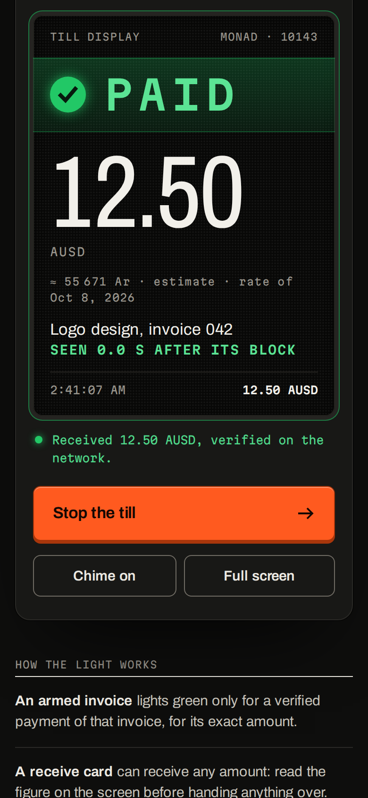
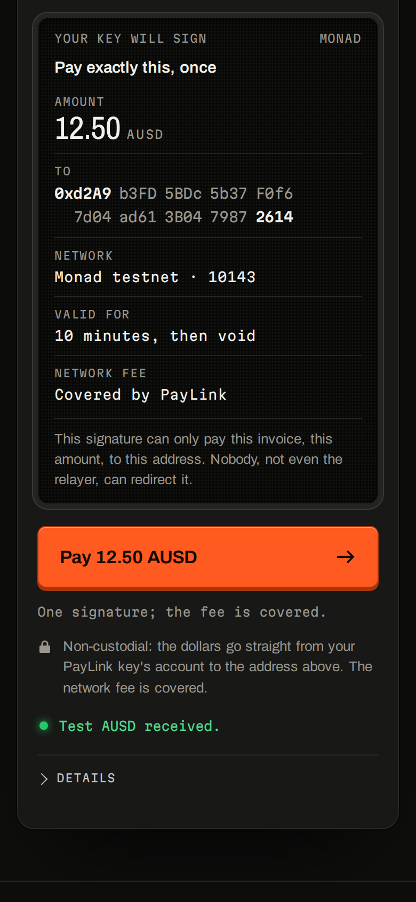

PayLink
PayLinkSigned dollar invoices.
Paid with a fingerprint.
Non-custodial · zero gas to create
Receipts anyone can verify on chain
paylink-mg.pages.dev · made in Antananarivo
PayLinkNon-custodial · zero gas to create
Receipts anyone can verify on chain
paylink-mg.pages.dev · made in Antananarivo

